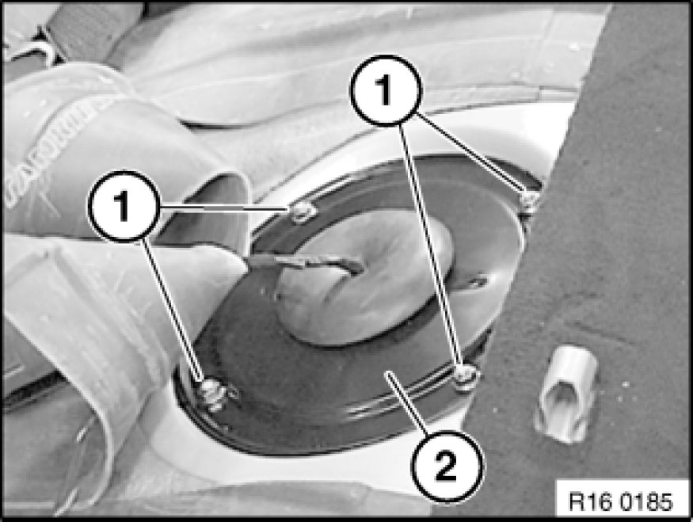
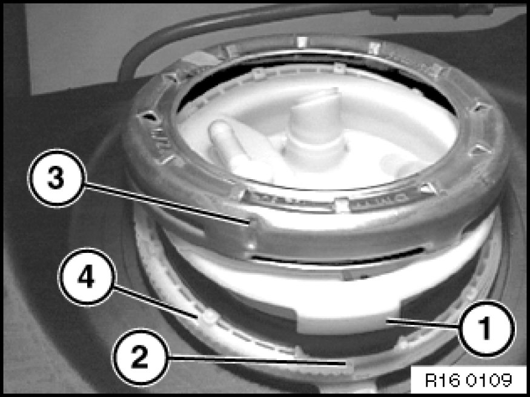
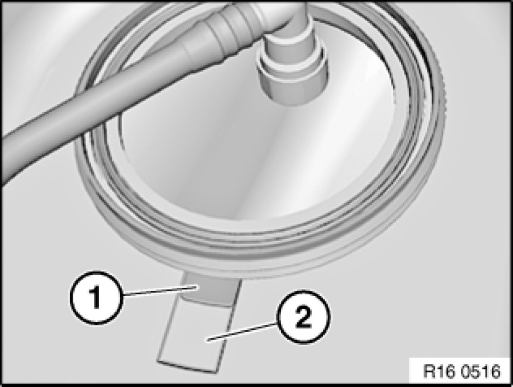
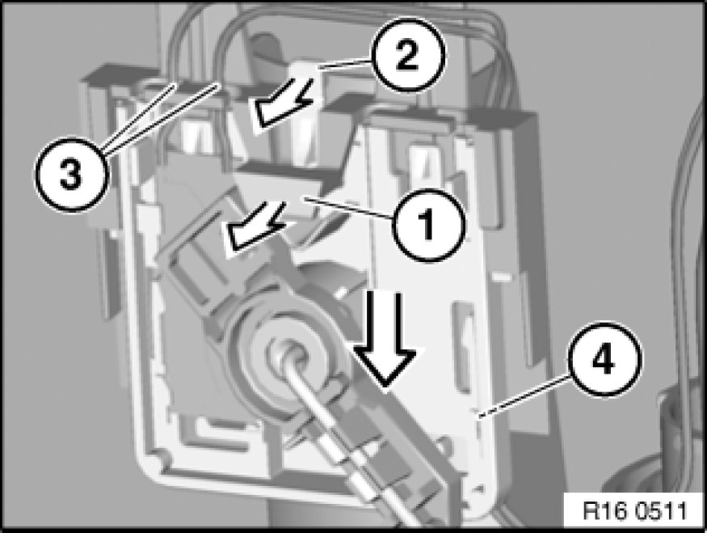
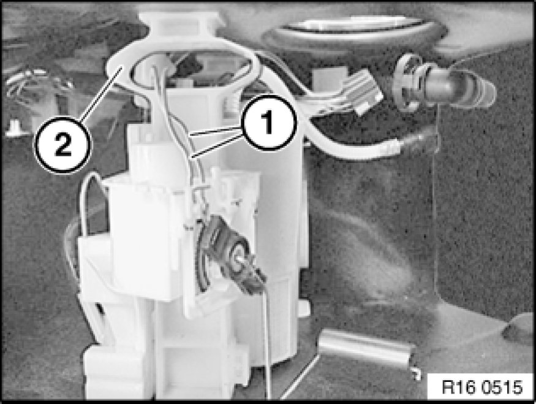

16 12 000 Removing and Installing/Replacing Fuel Gauge Sensor (Right Side)
16 12 000 - Removing and installing/replacing fuel gauge sensor (petrol/gasoline, right, N52)

Special tools required:
- 16 1 020 16 1 020 Pin Wrench
- 61 0 300 61 0 300 Releasing Tool (Complete Kit)
- 61 0 307 61 0 300 Releasing Tool (Complete Kit)

Recycling
Fuel escapes when fuel lines are detached. Have a suitable collecting container ready.
Catch and dispose of escaping fuel.
Observe country-specific waste-disposal regulations.

Important!
Ensure adequate ventilation in the place of work!
Avoid skin contact (wear gloves)!
Ensure absolute cleanliness when working on the open fuel tank.
Contaminants in the fuel tank can impair driving operation or may even result in vehicle breakdown!
Before starting the engine for the first time:
- Fill fuel tank with at least 5 liters of fuel.

Note:
- Removed lever-type sensor with cable length of 400 mm must no longer be fitted.
- Only lever-type sensor with cable length of 335 mm may be refitted.

Necessary preliminary tasks:
- Draw off fuel from fuel tank Procedures
- Remove rear seat bench Rear Seat, Through-Loading

Release screws (1) and remove cover (2) from right side of fuel tank.

Important!
- Press the blue button to unlock the quick-release fastener. Then carefully detach fuel feed line vertically upwards.
- Do not use any mechanical tools or means to detach the quick-release fastener.
- Quick-release fastener must be attached vertically without mechanical tools/means. It must snap audibly into place.
- Then carry out a leak test with engine running.
- Damaged or leaking quick-release fasteners must be replaced.
Unfasten plug connection (1) and disconnect.
Unlock and disconnect fuel feed line (2).
Unlock and detach vent line (3).

Release screw cap with special tool 16 1 020 16 1 020 Pin Wrench and remove.
Installation:
Tightening torque 16 14 2AZ 16 14 Fuel Pump.

Installation Note:
Service cap can only be installed in one position.
When installing, make sure lug (1) of service cap engages in corresponding opening (2) on fuel tank.
During torque tightening, notch (3) on screw cap can be clearly heard and felt to engage toothed segment (4) on fuel tank.
Replace rubber seal (2).

Important!
Make sure that tab (1) of adapter ring lies completely in recess (2).

Carefully raise service cap (4).
Important!
Carefully release quick-release fasteners and detach.
Make sure quick-release fasteners are correctly engaged.
Test the quick-release fasteners by pulling on them.
Unlock and detach fuel line (2).
Unlock and detach vent line (3).
Disconnect connector (1).

Installation:
Cable (1) must be laid in a loop around the corrugated tube (2).
Cable must not restrict freedom of movement of lever-type sensor!
Unlock and disconnect plug connection (1) using a screwdriver (2).

Unpin cables (1) issuing from lever-type sensor on blue plug using special tool 61 0 307 61 0 300 Releasing Tool (Complete Kit) from special tool kit 61 0 300 61 0 300 Releasing Tool (Complete Kit).

Important!
Risk of damage:
Carefully feed cable out of cable guides (3 and 4). Do not kink cable.
Removing fuel level sensor:
- Disengage cable from guides (3 and 4).
- Carefully pull tab (1) in direction of arrow; at the same time, press tab (2) in direction of arrow and press out fuel level sensor downwards.

Installation:
Observe the following procedure when installing the fuel level sensor.
1. Carefully push fuel level sensor (1) in direction of arrow onto sensor holder (2).
2. Fuel level sensor must snap audibly into place!
3. Carefully feed cable into cable guides (3).
Do not kink cable.
Make sure fuel level sensor is correctly positioned in both guides (see arrows).

Installation:
Lay cable (1) through upper loop of tank support (2).
Illustration shows cutaway model:
Installation:
Cable (1) must be laid under line (2) and engaged in cable holder (3).